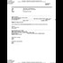

<html lang="en">
 <head>
<!-- Favicon -->
<link rel="shortcut icon" href="../../favicon.ico">
  <meta charset="utf-8"/>
  <title>
   Proof Of Hillary Clinton Asking Youtube to Censor Content!
  </title>
  <meta content="Post on /v/Conspiracy from 2015-10-25 by Aikido." name="description"/>
  <meta content="Proof Of Hillary Clinton Asking Youtube to Censor Content!" property="og:title"/>
  <meta content="Post on /v/Conspiracy from 2015-10-25 by Aikido." property="og:description"/>
  <link href="../../static/css/page.css" rel="stylesheet"/>
  <meta content="https://voat.conspiracy.hackliberty.org/thumbnails/3d/a3/3da3adb3-8be9-4b63-80ef-2979ef9ea7d7.jpg" property="og:image"/>
  <meta content="https://voat.conspiracy.hackliberty.org/v/conspiracy/612716.html" property="og:url"/>
  <meta content="width=device-width, initial-scale=1" name="viewport"/>
  <link href="https://voat.conspiracy.hackliberty.org/v/conspiracy/612716.html" rel="canonical"/>
  <meta content="article" property="og:type"/>
  <meta content="Voat /v/Conspiracy Archive" property="og:site_name"/>
  <meta content="en_US" property="og:locale"/>
  <meta content="summary_large_image" name="twitter:card"/>
  <meta content="Proof Of Hillary Clinton Asking Youtube to Censor Content!" name="twitter:title"/>
  <meta content="Post on /v/Conspiracy from 2015-10-25 by Aikido." name="twitter:description"/>
  <meta content="https://voat.conspiracy.hackliberty.org/thumbnails/3d/a3/3da3adb3-8be9-4b63-80ef-2979ef9ea7d7.jpg" name="twitter:image"/>
 </head>
</html>
<body class="dark">
 <div id="container">
  <!-- array (
  'submissionid' => 612716,
  'creationDate' => '2015-10-25 02:40:35',
  'domain' => 'tftppull.freethoughtllc.netdna-cdn.com',
  'formattedContent' => NULL,
  'isAdult' => 0,
  'isAnonymized' => 0,
  'subverse' => 'Conspiracy',
  'thumbnail' => '3da3adb3-8be9-4b63-80ef-2979ef9ea7d7.jpg',
  'title' => 'Proof Of Hillary Clinton Asking Youtube to Censor Content!',
  'url' => 'http://tftppull.freethoughtllc.netdna-cdn.com/wp-content/uploads/2015/06/ClintonFOIA.jpg',
  'userName' => 'Aikido',
  'archivedLink' => NULL,
  'archivedDomain' => NULL,
  'isDeleted' => 0,
) -->
  <div style="text-align:center; font-size:24px; font-weight:bold;">
   <a href="../../index.html" style="text-decoration: none; color: inherit;">
    Voat /v/Conspiracy Archive
   </a>
  </div>
  <div class="content" role="main">
   <div class="sitetable linklisting" id="siteTable">
    <div class="submission id-612716 link type-text" id="submission-612716">
     <a name="submissionTop">
     </a>
     <p class="parent">
     </p>
     <a class="thumbnail may-blank" href="http://tftppull.freethoughtllc.netdna-cdn.com/wp-content/uploads/2015/06/ClintonFOIA.jpg" target="_self">
      
     </a>
     <div class="entry unvoted">
      <p class="title">
       <a class="title may-blank" href="http://tftppull.freethoughtllc.netdna-cdn.com/wp-content/uploads/2015/06/ClintonFOIA.jpg" tabindex="1" target="_self" title="Proof Of Hillary Clinton Asking Youtube to Censor Content!">
        Proof Of Hillary Clinton Asking Youtube to Censor Content!
       </a>
       <span class="domain">
        (
        <a href="https://archive.searchvoat.co/search.php?d=tftppull.freethoughtllc.netdna-cdn.com">
         tftppull.freethoughtllc.netdna-cdn.com
        </a>
        )
       </span>
      </p>
      <p class="tagline">
       submitted
       <time datetime="2015-10-25T02:40:35+00:00" title="10/25/2015 2:40:35 AM">
        2015-10-25T02:40
       </time>
       by
       <span class="userattrs">
        <a class="author may-blank" href="https://archive.searchvoat.co/search.php?u=Aikido">
         Aikido
        </a>
       </span>
      </p>
      <ul class="flat-list buttons">
       <li class="first">
        <a class="comments may-blank" href="https://archive.searchvoat.co/v/Conspiracy/612716" rel="nofollow">
         2 comments
        </a>
       </li>
      </ul>
      <div class="expando link-expando" style="">
       
       <span class="tagline">
        JPG
        <a class="link-expando-direct" href="http://tftppull.freethoughtllc.netdna-cdn.com/wp-content/uploads/2015/06/ClintonFOIA.jpg" target="_blank">
         Open
        </a>
       </span>
      </div>
     </div>
     <div class="child">
     </div>
     <div class="clearleft">
     </div>
    </div>
    <div class="clearleft">
    </div>
   </div>
   <div class="horizontal-line">
   </div>
   <div class="commentarea">
    <div class="sitetable nestedlisting" id="siteTable">
     <div class="child id-2953062 comment even" style="">
      <div class="entry unvoted">
       <div class="noncollapsed" id="2953062" style=";">
        <p class="tagline">
         <a class="author may-blank" href="https://archive.searchvoat.co/search.php?u=Aikido">
          Aikido
         </a>
         <span class="userattrs">
         </span>
         <time datetime="2015-10-25T02:40:48+00:00" title="10/25/2015 2:40:48 AM">
          2015-10-25T02:40
         </time>
        </p>
        <div class="usertext-body may-blank-within" id="commentContent-2953062">
         <div class="md">
          <p>
           <p>
            In response to a Freedom of Information Act (FOIA) request in the Benghazi investigation, former Secretary of State Hillary Clinton was forced to release e-mails from a private account used to conduct official State Department business.
           </p>
           <p>
            Amongst the emails released online, via the FOIA, was a document with the title “Google and YouTube.” Within the correspondence, a Clinton staffer forwarded the personal contact information of Google and YouTube’s CEOs on to the Secretary’s Office, according to Andrew Demeter, writing for Minds. The email was allegedly in regards to a request to block an unknown YouTube video. Within one hour, a telling response came which stated that “the block will stay through Monday. They will not be unblocking it before then.” According to Demeter: Just last month, veteran journalist Luke Rudkowski was censored by Google for posting a video about — you guessed it! — Hillary Rodham Clinton. This incestuous relationship between tech companies and the federal government is no longer conspiratorial heresy, given that Clinton also recently hired a longtime Google executive to manage her upcoming presidential campaign. Evidence of one of the pillars of modern political power reaching out to two of the largest purveyors of information in the modern era, in an effort to stifle legitimate sharing of information, reeks of crony capitalism and the true dysfunction of modern government.
           </p>
           <p>
            This information needs to go viral so people can see exactly how business is done in Washington, D.C.. Politicians reaching out to censor the citizens of this country from engaging in legitimate dissent on our most popular social tools. In addition to showing the complicity of government and private business, it also provides a cautionary tale about how we perceive businesses such as YouTube and Google. If these companies are willing to censor content, with a simple call from some political staffers, what lengths would they go to to keep the American people ignorant of the most vital information and truths politicians want to hide? Knowledge truly is power and if these companies are manipulating information at the whim of politicians we are truly living in a dangerous façade of reality. Please share this important story to expose the censorship taking place at the highest levels! ( via thefreethoughtproject.com )
           </p>
          </p>
         </div>
        </div>
        <ul class="flat-list buttons">
         <li class="first">
          <a class="bylink" href="https://archive.searchvoat.co/v/Conspiracy/612716/2953062" rel="nofollow">
           link
          </a>
         </li>
        </ul>
       </div>
      </div>
      <div class="child id-2969312 comment odd" style="">
       <div class="entry unvoted">
        <div class="noncollapsed" id="2969312" style=";">
         <p class="tagline">
          <a class="author may-blank" href="https://archive.searchvoat.co/search.php?u=CredAndBercuses">
           CredAndBercuses
          </a>
          <span class="userattrs">
          </span>
          <time datetime="2015-10-26T17:52:32+00:00" title="10/26/2015 5:52:32 PM">
           2015-10-26T17:52
          </time>
         </p>
         <div class="usertext-body may-blank-within" id="commentContent-2969312">
          <div class="md">
           <p>
            <p>
             What video from WeAreChange was censored? It's hilarious that Luke can make powerful (albeit not very smart) figures like Hillary tremble in their boots.
            </p>
           </p>
          </div>
         </div>
         <ul class="flat-list buttons">
          <li class="first">
           <a class="bylink" href="https://archive.searchvoat.co/v/Conspiracy/612716/2969312" rel="nofollow">
            link
           </a>
          </li>
         </ul>
        </div>
       </div>
      </div>
     </div>
    </div>
   </div>
  </div>
 </div>
<!-- Footer Section -->
<footer class="container-fluid mt-3">
  <p class="small mb-0">
    /v/conspiracy archive has 42504 posts and 159856 total comments.
    <a href="https://git.hackliberty.org/c0mmando/voat-conspiracy-archive/">source code</a>.
  </p>
</footer>

<script src="../../static/js/jquery-3.7.1.slim.min.js"></script>
<script src="../../static/js/comments-toggle.js"></script>

</body>
